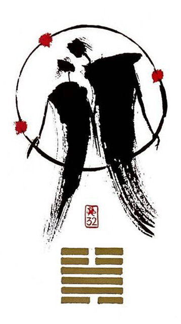

뇌풍항(항상 항)
평괘 15
(나 항상 그대를~)
현상을 유지한다변함이 없다.한결같은 모습으로 함께 하는 모습.안정적이나 한편으로는 권태롭기도 한 상황을 표현한 그림
지속성.한결같음.불변성.성숙함.영구적인.안정.착실.인내.끈기,지구력.일편딘심.일상반복
연애운
오래된 연인.부부.편안한 친구같은사랑.권태로움.무덤덤
사업운
반복의 연속.규칙적인 하루 일과.지루하고 따분함.현상태유지
속마음
썸거리를 두고 무덤덤한 마음
1년 이상편안한 친구같은 마음.권태로움
이별 후적극성은 없는 마음.언젠가 보겠지~담담하고 무기력한 마음
솔로연애운
새로운 이성 생길 확률 낮다
건강운
사소한 트러블 회복가능.전반적으료 좋음.유지가 관건